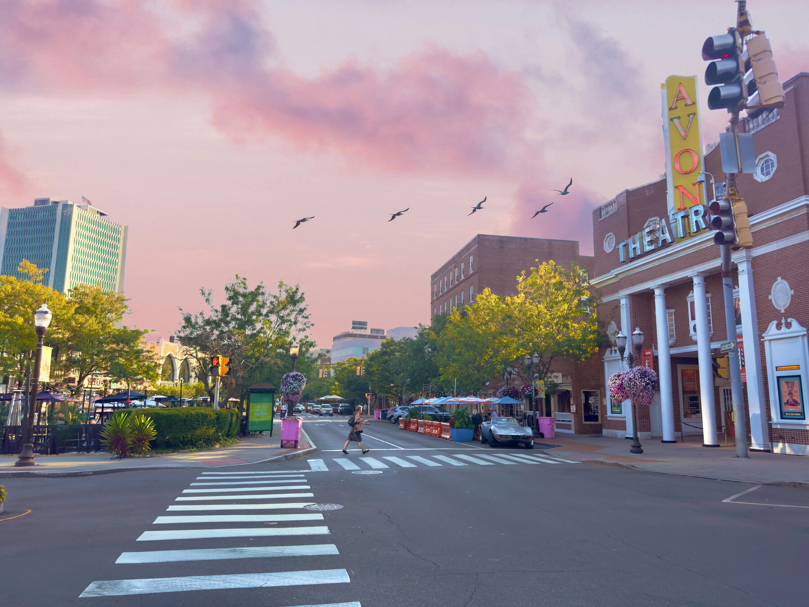

Stamford gives you a walkable downtown, Long Island Sound beaches, and a ~50-minute express train to Grand Central — in a city with a genuine restaurant scene, a growing arts calendar, and a corporate job base that lets many residents skip the NYC commute entirely. Here's what daily life actually looks like, from someone who works here every day.

What are the best restaurants and nightlife options in Stamford, CT?
Downtown Stamford is a genuine dining destination, anchored by Bedford Street — locally known as "Restaurant Row" — one of the densest restaurant strips in Fairfield County, with patios, bars, and cuisines from Peruvian to French bistro to classic burgers and shakes. Beyond Bedford, the South End and Harbor Point add waterfront dining, and the scene refreshes constantly, so there's always somewhere new to try. In 2025, Stamford's restaurant and hospitality sector continued expanding, with Harbor Point alone adding several new concepts — a trend that tracks with the city's broader population growth as NYC movers continue arriving (U.S. Census Bureau estimates, 2025).
What is there to do in Stamford, CT?
Stamford Downtown runs a deep calendar of mostly-free public events. The headliner is the Stamford Downtown Parade Spectacular each November — one of the largest helium-balloon parades in the country, drawing close to 100,000 spectators and kicking off the holiday season. Summer brings outdoor concerts, the Saturday farmers market at Veterans Memorial Park, arts-and-crafts fairs on Bedford Street, and live music and fitness programming across downtown parks.
What parks and waterfront areas does Stamford, CT have?
Stamford pairs urban density with serious green space:
- Mill River Park — downtown's signature green space, with riverside paths, a greenway, and the much-loved carousel.
- Cove Island Park — two sandy beaches, a playground, a mile-long walking trail, and a nature center; it's an Audubon-designated Important Bird Area.
- Cummings Park & Beach — 80 acres on Long Island Sound with a boardwalk, fishing pier, and beach.
(Beach and park parking permits are typically required May through September — easy to sort once you're a resident.)
Got a dog? See the dedicated Stamford dog parks guide.
How long is the commute from Stamford, CT to New York City?
Express Metro-North trains from Stamford reach Grand Central in about 50 minutes — this is Stamford's superpower. The Stamford Transportation Center is the second-busiest station in the entire Metro-North system after Grand Central, and express trains reach Grand Central in about 50 minutes (typical trips run roughly an hour to 1h15 depending on express vs. local). During peak hours trains depart every few minutes, and the station also serves Amtrak (including Acela) plus bus connections. Drivers get both I-95 and the scenic Merritt Parkway — but most commuters find the train the more predictable option. A newer ~900-space garage connects right to the platforms.
How are the schools in Stamford, CT?
Stamford Public Schools serves the city with around 20 schools, including three high schools — Stamford High School, Westhill High School, and the Academy of Information Technology & Engineering (AITE) — plus a network of magnet schools and International Baccalaureate (IB) programming. Private and parochial options are also available. (School enrollment and programs shift year to year — I'm happy to point relocating families to current district resources.)
Why do people choose to live in Stamford, CT?
You get a walkable, energetic downtown, miles of Sound waterfront and big parks, a transit hub with express service to Manhattan, and a full range of neighborhoods from urban towers to wooded estates — all in one city. For a lot of buyers, that's the whole package.
Ready to find your spot? Explore the neighborhood guide, see the Stamford cost of living breakdown, check the NYC commute details, read about moving from NYC to Stamford, review current market conditions, or get in touch.
More Questions About Living in Stamford
Is Stamford, CT safe?
Like any city, Stamford has neighborhoods that feel safer than others. Downtown, Harbor Point, Shippan, and North Stamford are consistently regarded by residents as safe and walkable. Parts of the South End and the areas near I-95 have historically had higher crime rates — which is exactly why I always recommend buyers look at block-level data, not citywide averages. Ask me about the specific block you're considering →
What is the cost of living in Stamford compared to New York City?
Housing is significantly cheaper — a Stamford condo or apartment typically runs 40–60% less per square foot than a comparable NYC unit. The trade-off is Connecticut's property tax and annual car tax, which don't exist in NYC. For most households, especially those dropping the NYC local income tax, the move is financially favorable. Full cost breakdown →
Are there good grocery stores and conveniences in downtown Stamford?
Yes. Downtown Stamford has a Whole Foods (on the main downtown corridor), several delis and specialty markets, and easy access to larger grocery stores in nearby areas. Harbor Point residents also have a Trader Joe's accessible via short drive or rideshare. For a full-size suburban shopping experience, West Side and North Stamford have major grocery chains within 10 minutes.
Is Stamford a diverse city?
Yes — Stamford is one of the most diverse cities in Connecticut. Its population reflects significant Latino, Black, Asian, and Caribbean communities alongside recent NYC transplants and long-established residents. The food scene directly reflects that diversity: you'll find everything from Colombian bakeries to West Indian restaurants to Japanese ramen spots within a short drive of downtown.